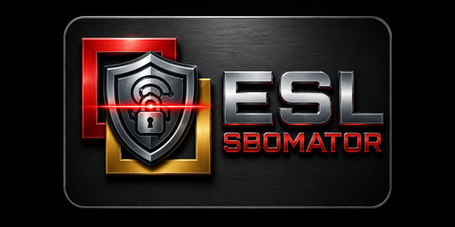

AI performance is no longer limited by compute — it's limited by how chips communicate
"The interconnect, not the compute, is the bottleneck."
Both Peking University and Nvidia Israel have independently reached this conclusion —
but from very different angles and at very different scales.
Published in National Science Review, July 2026
Feature maps flow directly through light — no memory round-trips
Feature maps transmitted directly through optical network — no intermediate memory writes
Key innovation: The optical switch maintains error-free performance across multiple communication paths with a spectral response exceeding 100 nm, making it suitable for future bandwidth expansion through wavelength-division multiplexing (WDM). The design eliminates the need for DSP retimers or external optical amplification.
Compared against a commercial GPU running the same image-denoising task
"Specific objectives can be realised under limited computational resources when algorithms, processor micro-architectures and chip-level interconnections are co-designed."
The $6.9B acquisition that became Nvidia's networking backbone
Shipping at hyperscale — adopted by Meta, Microsoft, Oracle, CoreWeave
Ultra-low-latency scale-out fabric for AI training clusters. InfiniBand with RDMA.
Ethernet scale-out for AI inference. 5× better power efficiency than pluggable.
Offloads networking, storage, security from host CPU/GPU. Line-rate processing.
Scale-across: connects AI clusters across data centers and campuses.
GPU-to-GPU scale-up within rack. Currently copper, optical roadmap in progress.
Israeli foundry scaling 1.6T silicon photonics for Nvidia networking protocols.
Chip-to-chip optical I/O for future AI architectures. $500M Series E (2026).
Moving optical engines onto the switch ASIC package
Same conclusion, very different approaches and scales
| Dimension | 🇨🇳 Peking University | 🇮🇱 Nvidia Israel / Mellanox |
|---|---|---|
| Maturity | Lab prototype, single demo (CNN) | Shipping at hyperscale; Meta, MS, Oracle |
| Scale | 5 compute nodes, 6.4 Tbps | Million-GPU factories, 409.6 Tb/s/switch |
| Optical Approach | On-chip all-optical network; optical switch routes between nodes | CPO on switch ASIC; optics replace pluggable transceivers |
| Problem Solved | Inference bottleneck — eliminates memory round-trips | Training + inference at DC scale — eliminates SerDes loss |
| Key Innovation | Algorithm-architecture-interconnect co-design | Full-stack co-design: GPU+NIC+Switch+Optics+Software |
| Bandwidth | 400 Gbps transceiver, 6.4 Tbps switch | 1.6T modules shipping, 409.6 Tb/s per switch |
| Power Efficiency | 1/9th compute of a GPU for same task | 5× better power efficiency vs. pluggable |
| Performance Claim | >100× faster inference (one workload) | 1.6× network perf vs. OTS Ethernet; deterministic latency |
| Revenue | Academic research (no revenue) | $10.98B/quarter networking revenue |
Both sides reached the same conclusion — from opposite directions
Analogy: Peking University is roughly where Mellanox was circa 2002 — proving the concept exists. Nvidia Israel has already built the factory, the supply chain, and the customer base.
China is simultaneously constraining and replicating Nvidia's networking dominance
SAMR Antitrust Probe (Dec 2024): China launched an antitrust investigation into Nvidia over Mellanox acquisition conditions. The deal was delayed over a year (2019–2020) by Chinese regulators.
US Export Curbs: China faces restrictions on advanced AI chips, pushing domestic innovation in alternative architectures like optical interconnects.
Domestic Push: Peking University's paper explicitly cites co-packaged optics and silicon photonic transceivers — the exact technology Nvidia Israel commercializes.
Yokneam R&D Hub: Nvidia's primary center for networking chips — the glue connecting AI processors into unified systems.
Israeli Ecosystem: Tower Semiconductor (Migdal HaEmek) supplies 1.6T silicon photonics. Ayar Labs, Teramount, and other Israeli startups provide critical components.
Strategic Dependency: Without Mellanox's networking, Nvidia's GPU clusters cannot function at scale — making Israel's R&D essential to global AI infrastructure.
Constrain & Replicate: China is trying to limit Nvidia's networking dominance through antitrust action while simultaneously trying to replicate it domestically through academic research.
Technology Flow: The Peking University paper validates the same architectural direction Nvidia Israel has been productizing since 2020.
Supply Chain Risk: CPO adoption projected at ~35% of AI DC optical modules by 2030 — the race is on.
Hyperscaler CAPEX: $630B+ expected spend on AI infrastructure in 2026 — much of it on processors and the systems that connect them.
Proof of concept meets production at scale
A proof of concept that validates the same architectural direction Nvidia Israel has been productizing. The 100× speedup is impressive but measured on a single 5-layer CNN for image denoising — generalization to LLM-scale workloads is unproven.
Production at scale: Shipping CPO switches at 409.6 Tb/s across million-GPU clusters, generating $11B/quarter. The optical technology is integrated into a full stack rather than demonstrated as a prototype.
Both sides prove the same fundamental truth: AI performance can no longer scale by adding more GPUs.
Light must replace copper — the question is whether it happens inside the compute pipeline (Peking) or at the data-center fabric (Nvidia Israel).
Both paths will likely converge as optical interconnects penetrate deeper into the chip stack.